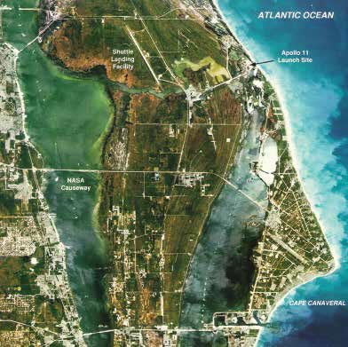

Lockheed Martin Hangar 2 – Cape Canaveral, Florida
May 2026 – Present
Lead HVAC engineer (with senior QC) for a highly specialized aerospace facility supporting Lockheed Martin operations at Cape Canaveral Space Force Station. Responsible for HVAC design, calculations, controls philosophy, specifications, interdisciplinary coordination, technical presentations, client communication, and construction documentation while balancing UFC, CCSFS Installation Standards, evolving owner requirements, high-stakes ramifications and client meetings, and complex process cooling systems.
Building size: 8,000 square feet with a 50' high bay.
HVAC system size: (2) 80 ton CHW systems, with additional and redundant DX systems.
Construction budget: $10,000,000
- Lead calculator, designer, drafter, and specification writer for two independent air-cooled chilled-water systems, including a dedicated process cooling loop, split-path AHUs, FCUs, recovery excursion sequences, and advanced dehumidification controls.
- Performed cooling load calculations, heating load calculations, ASHRAE 62.1 outdoor-air calculations, multi-zone ventilation calculations, pressurization calculations, and recovery excursion analyses from psychrometric Point A to Point B within a four-hour recovery requirement.
- Developed comprehensive engineering reports supporting excursion events, pressurization studies, psychrometric processes, and unique operating conditions throughout the facility.
- Executed detailed coordination within highly constrained mechanical rooms, resolving extensive 3D clashes with five internal disciplines and outside fire-protection consultants.
- Performed deep technical evaluations of Ingersoll Rand equipment, controls sequences, and manufacturer documentation to support evolving owner requirements. Completed an intensive two-day engineering study evaluating modular process cooling tower feasibility, blowdown limitations, and CGAM performance at 60°F / 78°F condenser-water conditions.
- Developed full HVAC technical narratives describing complex system operation while complying with UFC requirements, CCSFS standards, and Lockheed-specific engineering preferences.
- Leveraged GPT as an engineering productivity tool for calculation verification, report drafting, and technical polishing while maintaining engineering judgment and final responsibility.
- Produced numerous custom calculations supporting multiple operating modes, redundancy philosophies, and varying psychrometric processes across the project.
- Developed HVAC controls concepts supporting process cooling, excursion recovery, humidity management, and redundancy strategies for mission-critical spaces.
- Learned to navigate the UFC as the project's governing "source of truth," balancing strict compliance with practical engineering judgment.
- Studied the Facility Utilities Matrix (FUM) in exceptional depth, proactively identifying outliers before they generated downstream design rework.
- Managed hundreds of multidisciplinary review comments, including dozens of HVAC-specific technical responses, while consistently meeting aggressive client turnaround expectations.
- Presented highly technical redundancy studies, excursion-event strategies, and HVAC design decisions during large Design Review Meetings with audiences including engineers to senior leadership on the Lockheed side, internal side, and multiple government entities.
- Navigated friction-filled technical discussions involving clients, owners, senior engineers, and multiple competing viewpoints while building long-term professional trust and credibility.
- Balanced scope, schedule, technical excellence, client expectations, and evolving project priorities while serving as the responsible HVAC engineer for a mission-critical aerospace facility.